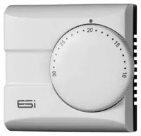
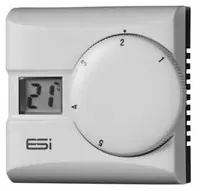
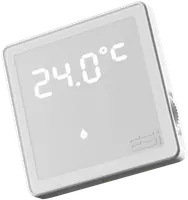
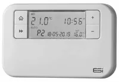
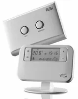
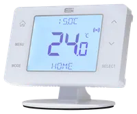
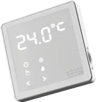
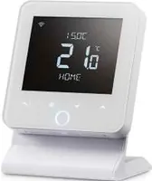

 | View User Instructions: ESi ESRTE2ESi ESRTE2 User Instructions PDF | View User Instructions: ESi ESRTE2ESi ESRTE2 User Instructions PDF | ESi ESRTE2 | Basic electronic room thermostat | | |
 | View User Instructions: ESi ESRTD3ESi ESRTD3 User Instructions PDF | View Installation: ESi ESRTD3ESi ESRTD3 Installation manual PDF | ESi ESRTD3 | Mains digital room stat | | |
 | View User Instructions: ESi ESRTD5ESi ESRTD5 User Instructions PDF | View Installation: ESi ESRTD5ESi ESRTD5 Installation manual PDF | ESi ESRTD5 | 5-series digital room stat | | |
 | View User Instructions: ESi ESRTP4+ESi ESRTP4+ User Instructions PDF | View Installation: ESi ESRTP4+ESi ESRTP4+ Installation manual PDF | ESi ESRTP4+ | Wired 7-day programmable thermostat | | |
 | View User Instructions: ESi ESRTP4RF+ESi ESRTP4RF+ User Instructions PDF | View Installation: ESi ESRTP4RF+ESi ESRTP4RF+ Installation manual PDF | ESi ESRTP4RF+ | Wireless programmable thermostat | | |
 | View User Instructions: ESi ESRTP4 TouchESi ESRTP4 Touch User Instructions PDF | View User Instructions: ESi ESRTP4 TouchESi ESRTP4 Touch User Instructions PDF | ESi ESRTP4 Touch | Touch programmable thermostat | | |
 | View User Instructions: ESi ESRTP5ESi ESRTP5 User Instructions PDF | View Installation: ESi ESRTP5ESi ESRTP5 Installation manual PDF | ESi ESRTP5 | 5-series wired programmable stat | | |
| View User Instructions: ESi ESRTP5 WiFiESi ESRTP5 WiFi User Instructions PDF | View Installation: ESi ESRTP5 WiFiESi ESRTP5 WiFi Installation manual PDF | ESi ESRTP5 WiFi | RF WiFi programmable thermostat | | |
 | View User Instructions: ESi ESRTP6WHWESi ESRTP6WHW User Instructions PDF | View Manual: ESi ESRTP6WHW installation manualESi ESRTP6WHW installation manual PDF | ESi ESRTP6WHW | OpenTherm WiFi stat with HW control | | |